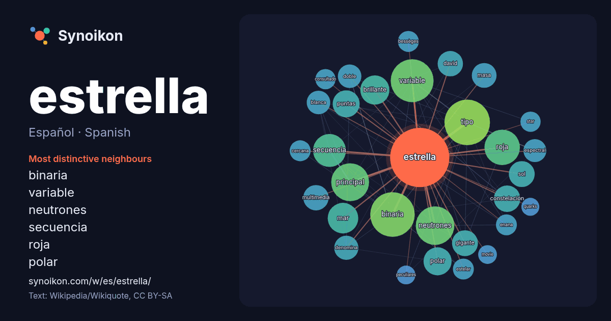

Español · Spanish · word of the day list
estrella
“star” · The words found around it in 1728 instances from Spanish Wikipedia, Wikiquote.

Most distinctive neighbours
- binaria 66×
- variable 51×
- neutrones 51×
- secuencia 32×
- roja 29×
- polar 26×
- brillante 24×
- constelación 23×
- multimedia 22×
- tipo 21×
- gigante 20×
- puntas 19×
- espectral 18×
- denomina 17×
- bessèges 16×
- enana 15×
- principal 15×
- masa 15×
- estelar 15×
- consultado 15×
× = how many times more often than in general Spanish Wikipedia text.
Most frequent neighbours
- tipo 71
- binaria 68
- variable 63
- neutrones 51
- principal 49
- roja 43
- nombre 42
- secuencia 37
- mar 32
- brillante 29
- conocida 28
- polar 27
- sistema 27
- puntas 25
- constelación 24
- gigante 23
- orden 23
- sol 23
- david 22
- multimedia 22
In context
- estrella brilla debido a la fusión termonuclear del hidrógeno en helio en su núcleo, que libera energía, la cual atraviesa el interior de la estrella Wikipedia snippets · Estrella
- estrella binaria es aquella que gira con una órbita junto a otra estrella. Cuando se puede distinguir por medio de telescopios que las dos estrellas son Wikipedia snippets · Estrella binaria
- Se denomina estrella polar a la estrella visible a simple vista que se ubica en la bóveda celeste de manera más próxima al eje de rotación de la Tierra Wikipedia snippets · Estrella polar
- Una estrella de servicio es una insignia de metal en forma de estrella en miniatura usada por los miembros de los siete servicios uniformados de Estados Wikipedia snippets · Estrella de servicio
- denomina "estrella de David". Hexagrama regular Triángulo equilátero Hexágono regular Estrella de David con triángulos equiláteros entrelazados Estrella de David Wikipedia snippets · Estrella de David
- La estrella de ocho puntas o estrella tartésica, también llamada estrella de Salomón o estrella de Abderramán I, es una forma geométrica usada por varias Wikipedia snippets · Estrella de ocho puntas
- Una estrella fulgurante es una estrella poco luminosa de la secuencia principal que despide llamaradas y sufre aumentos bruscos e impredecibles en su Wikipedia snippets · Estrella fulgurante
- y el modelo de la Estrella de la Muerte fue creado por John Stears. El zumbido que hace la cuenta regresiva hasta que la Estrella de la Muerte dispara Wikipedia snippets · Estrella de la Muerte
More Spanish words
- agua
- arte
- bosque
- caballo
- camino
- campana
- canción
- ciencia
- ciudad
- clima
- comida
- corazón
- desierto
- dinero
- dios
- espejo
- familia
- fuerza
- gato
- historia
- invierno
- isla
- jardín
- lengua
- lluvia
- madre
- mapa
- miel
- montaña
- muerte
- naturaleza
- oro
- otoño
- pan
- perro
- puente
- reloj
- sal
- salud
- silencio
- sombra
- tiempo
- tormenta
- trabajo
- tren
- té
- verano
- verdad
- vida
Precomputed on 2026-10-09 with default settings (±5 words, medium corpus). The interactive map can refresh it with live data.